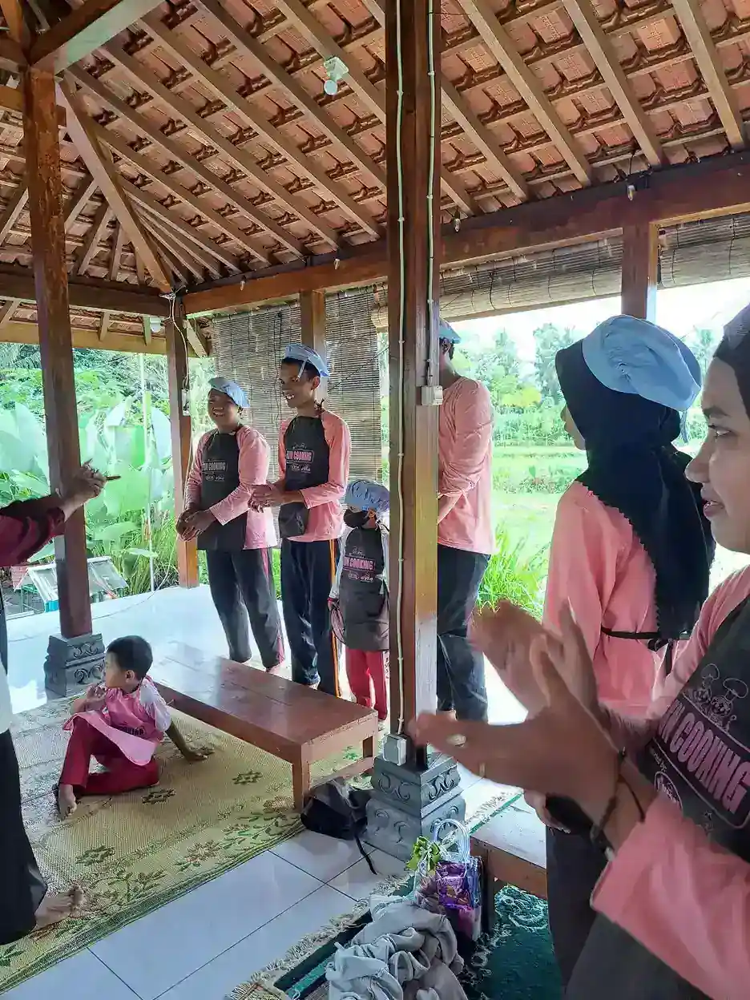
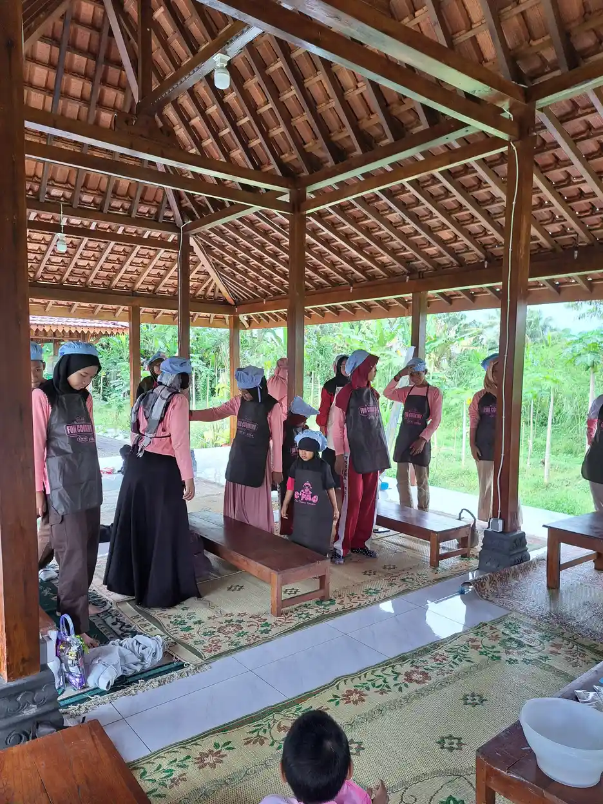
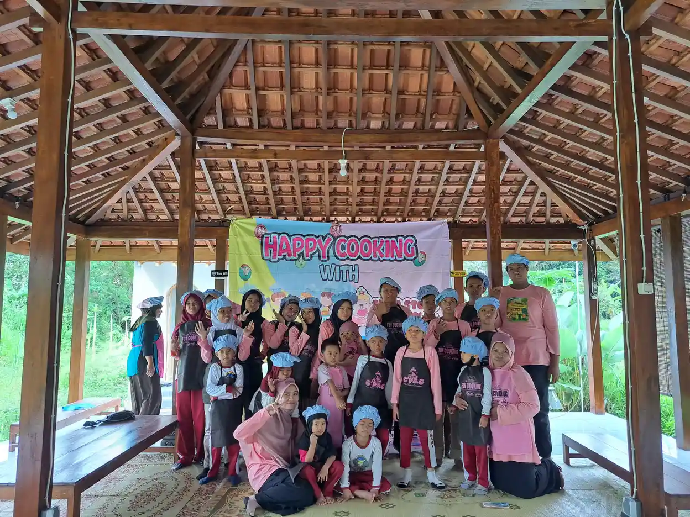

Ringkasnya: Pilih aplikasi berdasarkan tujuan dan akses anak. Khan Academy Kids dan GCompris menawarkan kegiatan akademik umum, Book Creator membantu membuat materi, sedangkan Cboard dan Avaz mendukung komunikasi AAC. Tidak satu pun menjadi obat atau pilihan wajib untuk semua anak.
Daftar Isi
- Mulai dari tujuan anak, bukan label diagnosis
- Tabel lima aplikasi dan platform yang perlu diperiksa
- Khan Academy Kids untuk kegiatan akademik umum
- GCompris untuk mencoba kegiatan dengan kontrol berbeda
- Book Creator untuk materi yang dekat dengan kehidupan anak
- Cboard dan Avaz: dukungan komunikasi, bukan permainan terapi
- Periksa akses sensorik, motorik, bahasa, dan suara
- Cek biaya, privasi, dan offline sebelum mengandalkan aplikasi
- Catat manfaat tanpa mengubah kebersamaan menjadi ujian
- Gunakan bersama anak, lalu bawa belajar ke luar layar
- Pertanyaan yang sering diajukan
Mulai dari tujuan anak, bukan label diagnosis
Mencari daftar aplikasi belajar untuk anak ABK sebaiknya dimulai dengan pertanyaan sederhana: kegiatan apa yang ingin lebih mudah dilakukan anak? Ada anak yang ingin mengenali jumlah saat membagikan makanan, ada yang ingin menceritakan pengalamannya, dan ada yang membutuhkan cara untuk menyatakan pilihan ketika ujarannya belum cukup dipahami. Kebutuhan tersebut tidak otomatis sama meskipun dua anak memiliki diagnosis yang sama. Perangkat yang menarik bagi satu anak juga belum tentu nyaman untuk anak lain.
Bedakan setidaknya tiga fungsi. Aplikasi akademik menyediakan aktivitas seperti membaca, menghitung, atau mencocokkan. Alat pembuatan materi memungkinkan guru dan keluarga menyusun buku sesuai pengalaman anak. Sementara itu, AAC, singkatan dari augmentative and alternative communication, mendukung komunikasi melalui beragam cara, termasuk simbol dan suara. AAC bukan sekadar permainan kosakata, bukan obat, dan bukan hadiah yang hanya diberikan setelah anak menyelesaikan tugas sekolah.
Tuliskan satu tujuan yang dapat diamati sebelum mengunduh. Misalnya, anak memilih cerita yang ingin dibacakan, menyampaikan ingin berhenti, atau menghubungkan jumlah di layar dengan benda di meja. Diskusikan tujuan tersebut melalui program pembelajaran individual bersama guru. Bila hambatannya terutama akses komunikasi, baca pula panduan aplikasi komunikasi AAC agar pemilihan tidak berhenti pada jumlah permainan yang tersedia.
Daftar berikut membandingkan lima program nyata berdasarkan fungsi, bukan mengurutkan merek terbaik. Keterangan produk ditinjau dari halaman resmi pada 17 Oktober 2026. Fitur dan ketentuan dapat berubah; keluarga tetap perlu memeriksa perangkat serta akun yang benar-benar akan dipakai.

Tabel lima aplikasi dan platform yang perlu diperiksa
Tabel ini merupakan peta awal untuk menyaring pilihan. Kolom pemeriksaan sengaja tidak memberi tanda bahwa sebuah produk pasti cocok untuk diagnosis tertentu. Kemudahan menekan tombol, pemahaman bahasa, pengalaman sebelumnya, dan dukungan orang dewasa bisa lebih menentukan daripada label kategori di toko aplikasi. Pilih satu kandidat untuk dicoba secara terarah, bukan memasang semuanya sekaligus lalu berharap anak menemukan jalannya sendiri.
| Aplikasi atau platform | Fungsi utama | Hal yang harus dicek |
|---|---|---|
| Khan Academy Kids | Aktivitas akademik awal, buku, dan permainan | Aplikasi seluler gratis; periksa bahasa instruksi, materi unduhan, serta tuntutan sentuhan. |
| GCompris | Kumpulan kegiatan akademik dan pengenalan komputer | Cek paket perangkat, bahasa dan suara, tingkat kegiatan, serta kontrol mouse atau layar sentuh. |
| Book Creator | Membuat buku dengan teks, gambar, audio, dan video | Cek paket gratis atau berbayar, akses akun, izin berbagi, serta perbedaan web dan iPad. |
| Cboard | AAC berbasis simbol dan text-to-speech | Cek susunan papan, suara perangkat, fitur versi yang dipilih, dan offline pada Chrome yang didukung. |
| Avaz | AAC berbasis gambar untuk komunikasi dan akses belajar | Cek bahasa produk, biaya lokal, metode akses, dan kebutuhan pendampingan. |
Untuk biaya, pisahkan harga aplikasi dari biaya perangkat, internet, penyimpanan, pelatihan, dan penggantian alat yang rusak. Akses awal gratis tidak selalu berarti seluruh fitur gratis. Sebaliknya, perangkat lunak bebas tidak otomatis berarti semua toko mendistribusikan paket dengan ketentuan identik. Jangan memasukkan detail pembayaran sebelum memahami apakah pembelian sekali bayar atau langganan, bagaimana pembatalannya, dan siapa pemegang akun keluarga atau sekolah.
Catat hasil pemeriksaan dalam bahasa yang mudah diteruskan kepada pendamping lain. Kalimat seperti “tombol terlalu kecil ketika tablet diletakkan mendatar” lebih berguna daripada “anak tidak mampu memakai teknologi”. Dalam pendidikan inklusi, hambatan akses perlu diperbaiki pada lingkungan dan alat, bukan dijadikan alasan menyingkirkan anak dari kegiatan bersama.
Khan Academy Kids untuk kegiatan akademik umum
Halaman resmi Khan Academy Kids menjelaskan aplikasi belajar untuk usia dua sampai delapan tahun dengan kegiatan literasi awal, membaca, menulis, bahasa, dan matematika. Aplikasi selulernya dinyatakan gratis tanpa iklan maupun langganan. Rentang usia produk membantu memahami rancangan materi, tetapi bukan alat mengukur kecerdasan atau menentukan apakah seorang anak dengan disabilitas pantas mengikuti kegiatan tertentu.
Program ini merupakan aplikasi pendidikan umum, bukan terapi khusus untuk seluruh anak ABK. Keluarga dapat menilai apakah jenis tugasnya sesuai dengan tujuan anak, apakah instruksinya dapat dipahami, dan apakah animasinya nyaman. Jangan berasumsi bahwa halaman toko berbahasa Indonesia berarti seluruh narasi atau kegiatan di dalam aplikasi juga memakai bahasa Indonesia. Buka contoh kegiatan, dengarkan instruksi, lalu pastikan anak tidak harus mengatasi hambatan bahasa sekaligus hambatan konsep baru.
Sebagai contoh penggunaan, setelah kegiatan menghitung di layar, ajak anak membagikan benda nyata sesuai kebutuhan sehari-hari. Anak boleh menunjukkan jumlah dengan menunjuk, mengambil benda, menggunakan gerak, atau memakai perangkat komunikasinya. Orang dewasa tidak perlu mengubah semua respons menjadi ujian lisan. Bila tujuan utamanya membaca, bandingkan juga dengan pembahasan aplikasi membaca untuk anak disleksia dan dukungan pengajaran yang sedang dijalani.
Periksa kebutuhan koneksi dan materi yang tersedia tanpa internet pada versi terpasang. Jangan menganggap seluruh katalog dapat dibuka offline hanya karena beberapa materi dapat diunduh. Keberhasilan menyelesaikan permainan juga belum membuktikan kemampuan berpindah ke situasi nyata. Amati apakah anak memahami kegiatan, mempunyai kesempatan memilih, dan tetap nyaman ketika bantuan orang dewasa dikurangi secara bertahap tanpa memaksanya.
GCompris untuk mencoba kegiatan dengan kontrol berbeda
GCompris adalah kumpulan perangkat lunak pendidikan yang dikembangkan komunitas KDE. Halaman resminya menyebut kegiatan pengenalan komputer, membaca, aritmetika, sains, geografi, permainan, warna, dan bentuk. Contoh kontrol yang disebut mencakup keyboard, mouse, dan layar sentuh. Keluarga dapat memulai dari satu kegiatan yang dekat dengan pengalaman anak, tanpa harus membuka seluruh kategori dalam satu kesempatan.
Adanya beragam kegiatan tidak berarti semua aktivitas mempunyai tuntutan akses yang sama. Kegiatan yang membutuhkan klik sederhana bisa berbeda tingkat kesulitannya dengan menyeret objek, mengetik, atau menekan beberapa tombol secara berurutan. Coba posisi layar, ukuran tampilan, dan alat penunjuk terlebih dahulu. Bila anak sering salah menyentuh karena jarak tombol atau posisi duduk, perbaiki pengaturan tersebut sebelum menyimpulkan bahwa konsep belajarnya terlalu sulit.
Halaman unduhan resmi memuat paket untuk sistem tertentu dan persyaratan perangkat yang berbeda. Bahkan ketersediaan versi terbaru tidak sama di semua sistem. Karena itu, jangan membeli komputer atau tablet hanya berdasarkan nama produk. Periksa halaman unduhan, kecocokan sistem, ruang penyimpanan, serta dukungan bahasa dan suara pada paket yang benar-benar tersedia. Kehadiran halaman resmi berbahasa Indonesia membantu membaca informasi produk, tetapi tetap perlu dibedakan dari kelengkapan terjemahan setiap aktivitas.
Hubungkan kegiatan warna, bentuk, atau jumlah dengan benda yang aman di rumah. Contohnya, anak memilih wadah untuk mengelompokkan tutup botol bersama pendamping, lalu menentukan kapan ingin berganti aktivitas. Kegiatan layar dapat menjadi salah satu pilihan, berdampingan dengan permainan motorik halus yang disesuaikan. Untuk kondisi akses motorik yang kompleks, masukan tenaga terapi okupasi dapat membantu menilai posisi, cara menekan, atau alat bantu yang dibutuhkan tanpa menjadikan aplikasi sebagai pengganti layanan tersebut.

Book Creator untuk materi yang dekat dengan kehidupan anak
Book Creator memungkinkan penyusunan buku dengan teks, gambar, audio, dan video. Halaman fiturnya mencantumkan pembacaan teks, dikte, dukungan pembaca layar, serta navigasi keyboard. Fitur tersebut memberi pilihan cara mengekspresikan pengetahuan, tetapi kecocokan aktual tetap bergantung pada perangkat, peramban, akun, dan kebutuhan akses anak. Jangan menjanjikan bahwa seluruh fitur tersedia pada semua paket atau bekerja sama pada setiap sistem.
Materi personal dapat dibuat dari pengalaman sederhana, misalnya urutan menyiapkan tas atau cerita tentang kegiatan bersama keluarga. Gunakan gambar benda bila foto pribadi tidak diperlukan. Anak dapat memilih bagian cerita yang ingin dimasukkan, menolak penggunaan fotonya, atau menyampaikan ide lewat gestur dan AAC. Buku tidak harus penuh teks agar bermakna. Pendamping boleh menjadi penulis teknis sambil mempertahankan pilihan anak sebagai isi utama, bukan mengganti seluruh ceritanya dengan penilaian orang dewasa.
Versi web dan aplikasi iPad bukan produk yang identik. Halaman resmi menjelaskan bahwa aplikasi iPad merupakan aplikasi offline tersendiri dan tidak menyinkronkan buku bersama aplikasi web. Halaman harga menyebut akses awal gratis dan paket berbayar. Perbedaan ini penting bila sekolah memakai akun web sementara keluarga berharap buku yang sama otomatis muncul pada aplikasi iPad di rumah. Pastikan alur berbagi dan cadangan sebelum membuat banyak materi.
Menurut pusat legalnya, buku siswa bersifat privat secara bawaan dan guru mengendalikan keputusan berbagi. Meski demikian, tetap periksa pengaturan akun nyata sebelum menerbitkan. Jangan unggah diagnosis, alamat, identitas sekolah rinci, atau rekaman yang mempermalukan anak. Bahan belajar seharusnya menumbuhkan partisipasi, bukan menciptakan jejak digital yang tidak diperlukan. Prinsip ini sejalan dengan peran orang tua dalam pendidikan inklusi yang menghargai suara dan martabat anak.
Cboard dan Avaz: dukungan komunikasi, bukan permainan terapi
Cboard merupakan aplikasi sumber terbuka yang mendukung komunikasi dengan simbol dan text-to-speech. Situs resminya menjelaskan penggunaan pada peramban modern serta dukungan offline pada Chrome desktop dan Android. Avaz memperkenalkan produknya sebagai aplikasi komunikasi dan pembelajaran berbasis gambar. Keduanya ditempatkan dalam daftar ini karena akses untuk bertanya, memilih, menolak, dan bercerita merupakan bagian penting dari keikutsertaan dalam belajar.
AAC tidak perlu menunggu anak lulus latihan mencocokkan gambar, mencapai skor tertentu, atau menunjukkan kesiapan berbicara. ASHA menjelaskan bahwa tidak ada kemampuan berpikir, skor tes, atau tonggak tertentu yang harus dicapai sebelum AAC dapat membantu. Penilaian profesional tetap berguna untuk menemukan sistem dan metode akses yang tepat. Fungsinya bukan menahan hak anak berkomunikasi sampai orang dewasa merasa anak cukup mampu.
Dalam kegiatan, pendamping dapat memberi contoh memilih simbol sambil berbicara secara alami, lalu memberi ruang untuk respons yang berbeda. Sediakan juga kosakata menolak, meminta jeda, menyampaikan sakit, dan berbagi komentar, bukan hanya meminta makanan. Jangan menyita alat komunikasi sebagai hukuman atau mematikan aksesnya hanya karena sesi permainan sudah selesai. Papan kertas cadangan dapat membantu ketika baterai habis atau perangkat sedang diperbaiki, sesuai sistem yang digunakan anak.
Untuk Cboard maupun Avaz, periksa bahasa papan, keluaran suara, ukuran tombol, susunan kosakata, biaya versi yang dipilih, dan cara menyimpan cadangan. Artikel ini tidak memastikan ketersediaan suara Indonesia untuk semua perangkat atau harga yang sama di semua wilayah. Uji suara pada perangkat nyata dan libatkan terapis wicara jika diperlukan. Panduan terapi wicara dan bantuan atau prompt komunikasi dapat menjadi bahan diskusi, bukan alasan memaksa anak meniru kata sebelum pesannya ditanggapi.

Periksa akses sensorik, motorik, bahasa, dan suara
Sebelum mengajak anak mencoba, lakukan pemeriksaan singkat tanpa menjadikannya tes kemampuan. Apakah ukuran sasaran sentuh cukup jelas? Bisakah kegiatan dihentikan tanpa mencari tombol tersembunyi? Apakah instruksi hanya tersedia lewat suara, hanya lewat tulisan, atau menggunakan kombinasi yang dapat diakses anak? Periksa pula apakah orang dewasa bisa menurunkan volume, mengurangi distraksi, dan memilih kegiatan tanpa harus melewati rangkaian animasi yang panjang.
Untuk akses motorik, perhatikan kestabilan posisi perangkat dan kelelahan ketika tangan harus menjangkau sudut layar. Kesalahan menekan dapat muncul karena antarmuka, bukan karena anak tidak mengerti. Dukungan keyboard atau pembaca layar yang disebut produsen belum otomatis menjamin seluruh alur dapat dipakai dengan alat bantu tertentu. Bila anak menggunakan switch atau metode akses alternatif, uji bersama orang yang memahami perangkat tersebut; jangan menganggap semua produk dalam tabel mendukungnya.
Bahasa juga memiliki beberapa lapisan: bahasa menu, instruksi kegiatan, isi bahan, dan suara pembaca. Materi berbahasa Indonesia bisa saja dibaca oleh suara dengan pelafalan yang kurang sesuai. Sebaliknya, anak yang terbiasa memakai lebih dari satu bahasa mungkin membutuhkan kosakata lintasbahasa. Pilih kata yang benar-benar dipakai di rumah dan sekolah. Periksa nama orang, makanan, serta ungkapan penting supaya komunikasi tidak dibatasi pada contoh bawaan aplikasi.
Amati kenyamanan tanpa mengharuskan kontak mata, duduk diam, atau ekspresi gembira tertentu sebagai syarat keberhasilan. Anak bisa menikmati kegiatan sambil bergerak atau memilih mendengarkan saja. Bila suara, cahaya, atau pola permainan terasa mengganggu, beri kesempatan berhenti. Pembahasan kesulitan belajar dapat membantu keluarga merumuskan pertanyaan bagi guru, tetapi pilihan antarmuka tetap harus didasarkan pada kebutuhan individual, bukan daftar ciri diagnosis semata.
Cek biaya, privasi, dan offline sebelum mengandalkan aplikasi
Unduh dari tautan resmi pengembang atau toko yang dirujuknya. Hindari berkas modifikasi yang menjanjikan fitur premium terbuka, terutama untuk perangkat yang menyimpan foto, rekaman, atau data komunikasi anak. Baca permintaan izin kamera, mikrofon, penyimpanan, dan akun. Tanyakan apakah izin tersebut memang diperlukan untuk kegiatan yang dipilih. Jika hanya ingin menghitung benda, keluarga mungkin tidak perlu memberikan akses foto atau merekam suara pribadi.
Untuk layanan yang memerlukan akun, sepakati siapa pengelola dan siapa yang boleh membuka materi. Gunakan identitas minimum yang diizinkan layanan, kata sandi yang tidak dibagikan ke grup, dan pengaturan berbagi paling terbatas yang tetap memungkinkan kegiatan. Kebijakan privasi adalah titik awal, bukan jaminan bahwa setiap tindakan pengguna aman. Sebuah buku yang awalnya privat dapat berubah cakupan pembacanya ketika tautan diterbitkan atau dibagikan kembali oleh orang lain.
Lakukan uji offline yang konkret. Siapkan materi dan suara saat ada koneksi, tutup lalu buka kembali aplikasi dalam mode pesawat, kemudian coba kegiatan yang akan digunakan. Periksa bukan hanya halaman pembuka, tetapi tombol suara, gambar, penyimpanan hasil, dan pemulihan setelah perangkat dinyalakan ulang. Jangan menyamaratakan hasil satu peramban ke semua perangkat. Catat bagian yang masih membutuhkan internet supaya guru atau keluarga tidak terkejut saat berada di tempat dengan sinyal terbatas.
Periksa biaya perpanjangan dan cara mengekspor materi sebelum menambah banyak data. Bila langganan dihentikan, keluarga perlu mengetahui apakah buku atau papan masih dapat dibaca, dicadangkan, atau dipindahkan. Untuk aplikasi AAC, kontinuitas komunikasi lebih penting daripada mengejar fitur baru. Simpan cadangan yang sesuai dan mudah dijangkau pendamping, sambil menjaga agar data sensitif tidak tersebar melalui perangkat bersama yang dapat dibuka siapa saja.
Catat manfaat tanpa mengubah kebersamaan menjadi ujian
Sepakati juga cara mengevaluasi percobaan bersama anak dan pendamping. Catatan singkat dapat memuat kegiatan yang ditawarkan, pilihan anak, bantuan yang diperlukan, serta apakah pesan atau konsep dipakai kembali pada situasi lain. Hindari menulis kesimpulan tentang diagnosis berdasarkan keberhasilan membuka menu. Jika anak memilih tidak melanjutkan, cari tahu apakah tugasnya tidak menarik, bahasanya membingungkan, suara terlalu keras, atau posisi perangkat melelahkan. Pilihan menolak tetap perlu dihormati meskipun orang dewasa sudah mengeluarkan biaya. Materi yang lebih sederhana atau benda nyata mungkin lebih berguna untuk tujuan saat itu.
Jangan mengubah seluruh waktu bersama menjadi kesempatan mencatat kemajuan. Anak juga membutuhkan kegiatan yang dilakukan karena menyenangkan, tanpa skor dan laporan. Bila sekolah dan rumah memakai alat yang sama, sepakati kosakata serta dukungan yang konsisten sambil tetap memberi ruang untuk minat anak. Perubahan aplikasi sebaiknya tidak menghapus cara komunikasi yang sudah dikenalnya. Orang dewasa dapat mempelajari fitur baru lebih dulu dan menyediakan jalur kembali ke kegiatan yang familiar bila percobaan terasa terlalu berat.
Bila keluarga ingin membandingkan dua pilihan, gunakan tujuan yang sama dan jelaskan perbedaan bantuan yang diberikan. Aplikasi yang tampak menghasilkan jawaban lebih banyak mungkin sebenarnya dioperasikan terutama oleh orang dewasa. Sebaliknya, respons yang lebih sedikit tetapi benar-benar dipilih anak dapat memberi informasi lebih berguna tentang aksesnya. Catatan seperti ini membantu diskusi dengan guru tanpa mengubah percobaan di rumah menjadi penelitian klinis atau janji hasil bagi keluarga lain.

Gunakan bersama anak, lalu bawa belajar ke luar layar
Mulailah ketika anak mempunyai kesempatan memilih dan tidak sedang dipaksa mengejar target orang dewasa. Tawarkan kegiatan yang bermakna, tunjukkan cara menggunakannya, lalu tunggu. Pendamping bukan penguji yang terus meminta jawaban benar, melainkan rekan yang membantu anak memahami pilihan. Bila anak menjauh, menutup layar, memakai simbol berhenti, atau memilih benda lain, respons tersebut juga merupakan informasi penting tentang kebutuhannya pada saat itu.
Tidak ada satu angka durasi layar dalam panduan ini yang diberlakukan untuk semua anak ABK. Usia, kondisi kesehatan, tujuan akses, kebutuhan istirahat, tidur, gerak, dan rutinitas keluarga perlu dipertimbangkan. Akses AAC untuk menyampaikan kebutuhan tidak sama dengan menonton hiburan pasif. Jika keluarga membutuhkan batas penggunaan untuk kegiatan tertentu, susun rencana yang dapat dipahami dan dibicarakan bersama tenaga profesional bila ada persoalan kesehatan atau fungsi sehari-hari.
Setelah kegiatan digital, berikan pilihan lanjutan yang relevan. Cerita tentang memasak dapat diikuti memilih bahan, merasakan tekstur yang aman, atau menyampaikan komentar saat orang dewasa menyiapkan makanan. Permainan jumlah bisa dihubungkan dengan membagikan sendok. Buku pengalaman dapat dibaca bersama saudara, tetapi anak tidak wajib tampil atau menceritakan kembali di depan orang lain. Inspirasi belajar memasak bersama dan kegiatan bermain membantu menjaga pengalaman belajar tetap beragam.
Nilai manfaat lewat partisipasi nyata: apakah anak mempunyai lebih banyak pilihan, lebih mudah menyampaikan pesan, atau menemukan kegiatan yang ingin diulang? Skor permainan, jumlah ketukan, dan lamanya bertahan di kursi tidak cukup untuk menyimpulkan perkembangan. Daftar ini tidak membuktikan bahwa seluruh aplikasi efektif secara klinis bagi semua anak autistik atau seluruh ABK. Bila alat tidak cocok, ubah dukungan atau pilih alternatif tanpa menyalahkan anak. Kenali program YUKA atau hubungi YUKA untuk bertanya tentang kegiatan dan pendampingan yang tersedia.
Pertanyaan yang Sering Diajukan
Apa aplikasi belajar yang paling cocok untuk anak ABK?
Tidak ada satu aplikasi yang paling cocok untuk semua anak ABK. Khan Academy Kids dan GCompris menyediakan kegiatan akademik umum, Book Creator membantu membuat materi, sedangkan Cboard dan Avaz mendukung komunikasi AAC. Pilih berdasarkan tujuan, akses perangkat, bahasa, dan respons anak.
Apakah semua aplikasi dalam daftar ini gratis?
Tidak. Aplikasi seluler Khan Academy Kids dinyatakan gratis tanpa iklan atau langganan. Book Creator memiliki akses awal gratis dan paket berbayar. Untuk Cboard, GCompris, dan Avaz, periksa ketentuan versi, toko, atau paket yang dipilih sebelum membayar.
Apakah aplikasi tersebut sudah mendukung bahasa Indonesia?
Jangan menyamakan bahasa halaman promosi dengan bahasa kegiatan atau suara aplikasi. Periksa menu, instruksi, kosakata, dan suara pada perangkat yang akan digunakan. Ketersediaan terjemahan, pembacaan suara, serta unduhan bahasa bisa berbeda antarsistem dan versi.
Apakah anak harus lulus tes kesiapan sebelum menggunakan AAC?
Tidak. ASHA menjelaskan bahwa penggunaan AAC tidak mensyaratkan skor tes, kemampuan berpikir, atau tonggak tertentu. Penilaian profesional membantu memilih akses dan sistem komunikasi yang sesuai, bukan menjadi ujian kelayakan anak untuk berkomunikasi.
Bisakah aplikasi belajar digunakan tanpa internet?
Kemampuannya berbeda. Cboard menyebut dukungan offline pada Chrome desktop dan Android. Book Creator untuk iPad merupakan aplikasi offline terpisah dari versi web. Uji kegiatan, suara, dan materi yang sudah disiapkan dalam mode pesawat sebelum mengandalkannya di luar rumah.
Berapa lama waktu layar yang tepat untuk setiap anak ABK?
Tidak ada durasi tunggal dalam panduan ini yang berlaku untuk seluruh anak ABK. Pertimbangkan usia, kebutuhan akses komunikasi, kondisi kesehatan, kenyamanan, tidur, dan rutinitas anak bersama tenaga profesional bila diperlukan. Akses AAC tidak boleh disamakan begitu saja dengan hiburan layar.
Apakah aplikasi dapat menggantikan guru atau terapi?
Tidak. Aplikasi merupakan alat bantu kegiatan belajar atau komunikasi, bukan obat maupun pengganti guru dan layanan profesional. Hubungkan kegiatan di layar dengan interaksi sehari-hari, berikan pilihan kepada anak, dan evaluasi manfaat berdasarkan partisipasi nyata, bukan hanya skor aplikasi.
Bacaan Terkait
Sumber dan Referensi
- Khan Academy Kids: fungsi, rentang usia produk, dan ketentuan aplikasi seluler
- GCompris: kategori aktivitas dan pengembang KDE
- GCompris: unduhan dan kecocokan sistem
- Book Creator: fitur akses dan perbedaan aplikasi web dengan iPad
- Book Creator: akses awal gratis dan paket berbayar
- Book Creator: privasi dan pengendalian berbagi
- Cboard: komunikasi berbasis simbol, peramban, dan offline
- Avaz: aplikasi komunikasi dan pembelajaran berbasis gambar
- ASHA: pilihan AAC dan tidak adanya prasyarat skor tes atau tonggak
Catatan: Artikel ini bersifat edukasi umum dan bukan pengganti konsultasi dengan psikolog, tenaga kesehatan, atau petugas layanan sosial resmi. Informasi produk ditinjau pada 17 Oktober 2026. Periksa kembali harga, bahasa, suara, koneksi, dan fitur pada versi yang akan digunakan.